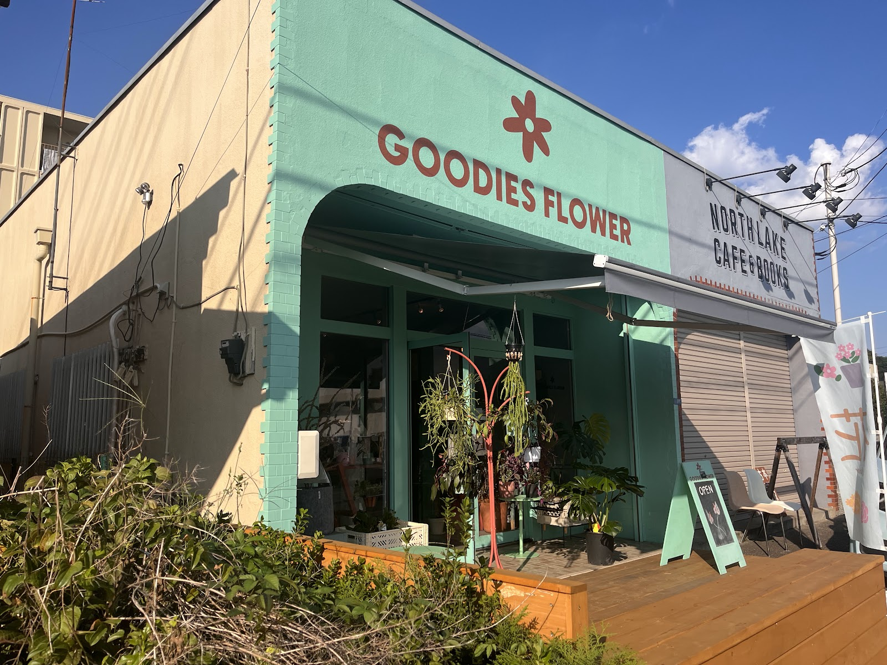
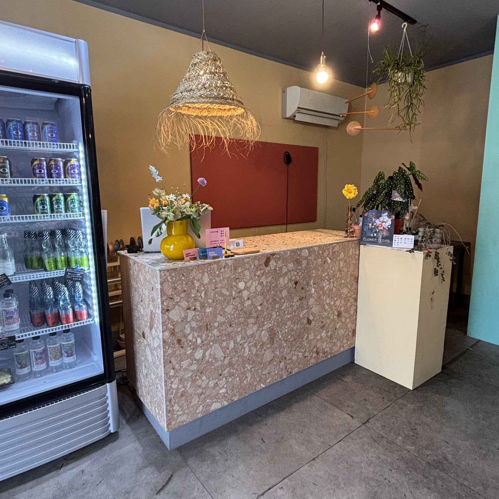
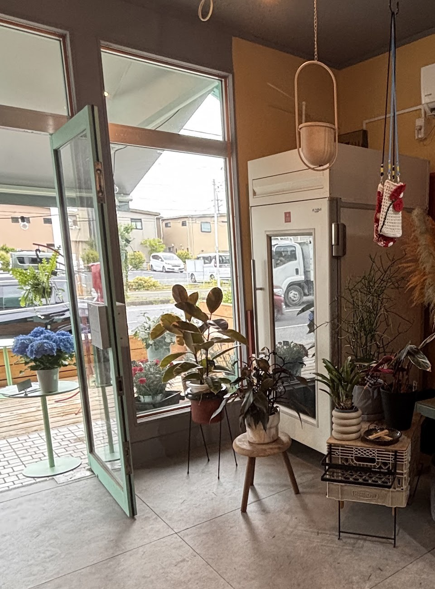

Location
目印は、ミントグリーンの壁
GOODIES FLOWERは、千葉県我孫子市緑2丁目にあるお花屋さんです。
やわらかなミントグリーンの外壁が目印で、
お隣には「NORTH LAKE CAFE & BOOKS」さんがあります。
カフェに立ち寄られた際にも見つけていただきやすい場所です。
ぜひ、隣同士まとめて訪れてみてください。

写真: saki(Google マップ)

写真: saki(Google マップ)
Interior
グレー、テラコッタ、マスタードイエロー
店内はグレーやテラコッタ、マスタードイエローといった
個性的な色合いが重なり合う、居心地のよい空間です。
花と一緒に、色や素材の組み合わせを楽しんでいただけるディスプレイを
少しずつ手を加えながら作っています。
お客様からも雰囲気の良さをよくお褒めいただいています。
Owner
オーナーについて
オーナーは、一人ひとりのお話にじっくり耳を傾けることを大切にしています。
お祝いの気持ちも、言葉にしづらい別れの気持ちも。
どんな想いも受け止めながら、その方に合ったお花を一緒に探していきます。
花のことをたずねれば、つい会話が弾んでしまう。
そんな時間も含めて、このお店らしさだと感じています。

写真: saki(Google マップ)